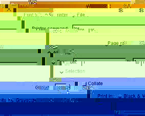

Über AbiWord
Einführung
Über Open Source
Index
Inhalt
Warum AbiWord?
Terminologie
Arbeitsplatz
SDI gegen MDI
Installation
Linux Intel
Linux PPC
BeOS Intel
BeOS PPC
Solaris
FreeBSD
Erste Schritte
Befehle editieren
Text eingeben
Formatieren
Absätze
Tabulatoren
Die Spalten
Die Abschnitte
Stile
Objekte einfügen
Drucken
Suchen und Ersetzen
Einstellungen
Abkürzungen
abisource.com
FAQ
Credits
Suchen |
|
Da AbiWord WYSIWYG (What You See is What You Get) ist, stellen Sie sicher, daß Ihr
Dokument so aussieht, wie Sie es haben möchten. Möglicherweise möchten Sie hierzu mit
dem Zoom das Dokument als Ganzes sehen.
at once).
Um das Dokument auszudrucken, wählen Sie eine der folgenden Aktionen:
- Das Icon "'Print"
 anklicken.
Dies wird das Dokument sofort auf den Standarddrucker schicken. Während
das Dokument gedruckt wird, können Sie weiterarbeiten. anklicken.
Dies wird das Dokument sofort auf den Standarddrucker schicken. Während
das Dokument gedruckt wird, können Sie weiterarbeiten.
- Im 'File' Menu "Print" anklicken.
- Das Tastaturkürzel "Ctrl" und "P" verwenden.
Die beiden letzten Aktionen werden ein Druck-Dialog Fenster öffnen.
Druck-Dialog Box
Windows
- Wählen Sie den Drucker, den Sie verwenden wollen aus der Liste neben "Name:" aus. Der Eigenschaften-Knopf ermöglicht das Verändern der Parameter, die mit dem Durkcer verbunden sind, wie die Papiergröße (A4, A5, ...), die Orientierung (Hochformat, Querformat) und die Druckqualität.
- Druck-Bereich:
- Wenn Sie das gesamte Dokument drucken wollen, wählen Sie "All xpages" an.
- Wollen Sie nur einige Seiten durchen, so klicken Sie die Option "Pages" an und füllen die Felder "From.....to...." aus.
- Kopien:
Dies ermöglicht Ihnen die Anzahl der Kopien anzugeben.
Haben Sie die Optionen eingestellt, so klicken Sie auf den "OK" Knopf oder brechen die Aktion mit dem "Cancel"-Knopf ab.
Linux
|

Linux Druck-Dialog Box |
- Wählen Sie den Drucker, indem Sie "lpr" in "lpr -PDrucker" ändern. Sie können sie Papiergröße mit Hilfe des Druckfilters (Siehe /etc/printcap) einstellen.
- Wenn sie "Print to file" ausgewählt haben, wird das Dokument nicht zum Drucker geschickt. Diese Option wird eine Datei anlegen, die Sie später auf einem Drucker an einem anderen Rechner, der kein AbiWord zu haben braucht, ausdrucken können. Der Drucker muß jedoch das gleiche Modell sein, das Sie hier ausgewählt haben. Unter UNIX wird die Datei im PostScript 2.0 Format mit der Erweiterung ".ps" angelegt, welches Sie mit jedem PostScript-Drucker ausdrucken können oder mit dem Programm Ghostscript umwandeln können.
- Wenn Sie die Gnome Version verwebdeb, können Sie ebenfalls eine pdf Datei anlegen.
- Seitenbereich:
- Wenn Sie das gesamte Dokument drucken wollen, wählen Sie "All xpages" an.
- Wollen Sie nur einige Seiten durchen, so klicken Sie die Option "Pages" an und füllen die Felder "From.....to...." aus.
- Collate: Select to have your printed copies collated.
- Kopien:
Dies ermöglicht Ihnen die Anzahl der Kopien anzugeben.
Haben Sie die Optionen eingestellt, so klicken Sie auf den "OK" Knopf oder brechen die Aktion mit dem "Cancel"-Knopf ab.
|